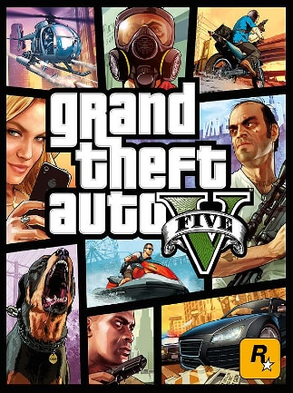
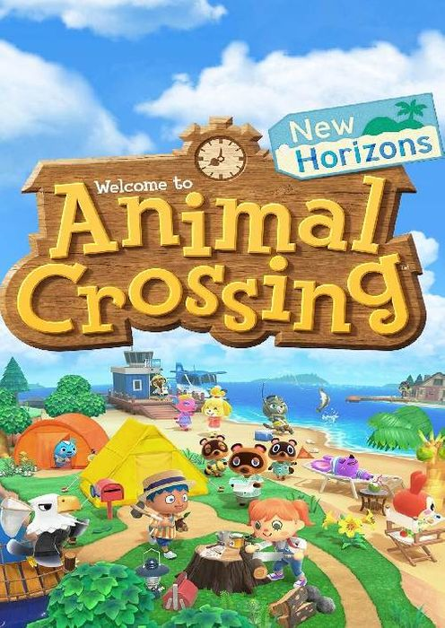
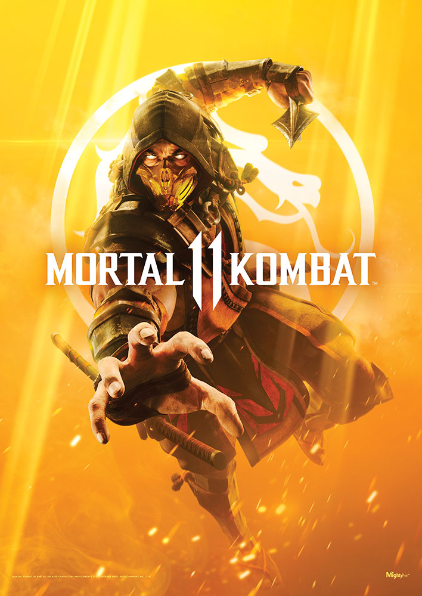
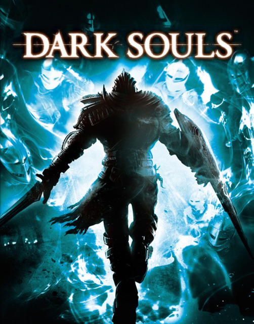
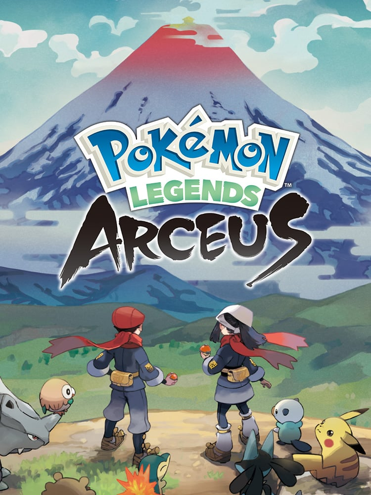

Apex Legends (2019) IMBd Rating: 7.4/10 ING Rating: 9/10 Pick your character. Round up your squad. Show everyone what legends are made up of.
Apex Legends is a free-to-play battle royale-hero shooter game developed by Respawn Entertainment and published by Electronic Arts. Play the classic 60-person Battle Royale matches, 3v3 Arenas battles, and limited-time modes and takeovers! PLATFORMS:
PlayStation 4, PlayStation 5, Nintendo Switch, Xbox One, Xbox Series X and Series S, Andriod, IOS, and Microsoft Windows
*for FREE*
Batman: Arkham City (2011) IMDb Rating: 9.4/10 ING Rating: 9.5/10 A action-adventure based on the DC Comics superhero Batman, it is a sequel to the 2009 video game Batman: Arkham Asylum and the second installment in the Batman: Arkham series. The game was developed by Rocksteady Studios and plublished by Warner Bros. Interactive Entertainment. PLATFORMS: PlayStaion 4, PlayStation 3, Xbox One, Wii U, Microsoft Windows, and macOS
Bioshock (2007) IMBd Rating: 9.1/10 ING Rating: 9.7/10 A series of 3 games Bishock 1 and 2 Remastered, and Bioshock Infinite. A single-player retrofuturistic game where you as the one survivor of a plane crash (Jack) discovers an abandoned underwater utopia, only to find out the mystery behind its creation is more sinister than he belived. You must survive through quick thinking, weaponary, and super human powers. To defeat Rapture's mutated monsters, you must become one PLATFORMS: PlayStation 3, PlayStation 4, Xbox One, Xbox 360, Nintendo Switch, Microsoft Windows, and macOS
Minecraft (2009) IMDb Rating: 8.5/10 ING Rating: 9/10 A first-person survival action/sandbox adventure game. The World of Minecraft where you can build, brew potions, enchant your armor, and tools and adventure other biomes. Visit the Nether, or even defeat the Ender Dragon in the End. PLATFORMS: PlayStaion 4, PlayStation 3, Xbox One, Wii U, Microsoft Windows, etc.

Grand Theft Auto V (2013) IMDb Rating: 9.5/10 ING Rating: 10/10 Set in the city Los Santos, three very different criminals team up for a series of heists and walk into some of the most thrilling experiences in the corrupt city of Los Santos. PLATFORMS: PlayStaion 4, PlayStation 3, PlayStation 5, Xbox One, Xbox Series X and Series S, and Microsoft Windows
Elden Ring (2022) IMDb Rating: 9.5/10 ING Rating: 10/10 An expansive fantasy Action-RPG game, Rise, Tarnished, and be guided by grace to bronish the power of the Elden Ring and become an Elden Lord in the Lands Between. PLATFORMS:PLATFORMS: PlayStaion 4, PlayStation 5, Xbox One, Xbox Series S and Series X, Microsoft Windows
The Witcher 3: Wild Hunt (2015) IMDb Rating: 9.7/10 ING Rating: 9.3/10 A cinematic fantasy RPG game with a unique combination of a non-linear story and open world, character-driven story focused on player choice, tactical combat and a rich, living environment. The story is a monster hunter for hire embarks on an epic journey to find his former apprentice before The Wild Hunt can capture her and bring about the destruction of the world. PLATFORMS: PlayStaion 4, PlayStation 5, Xbox One, Xbox Series X and Series S, Nintendo Switch and Microsoft Windows
The Last Of Us (2013) IMDb Rating: 9.7/10 ING Rating: 10/10 A action/adveture game where you must survive an apocalypse on Earth where Joel and Ellie are brought together by desperate circumstances to which they must rely on each other to survive a brutal journey across what remains of the United States. PLATFORMS: PlayStaion 4 and PlayStation 3

Animal Crossing (2020) IMDb Rating: 7.9/10 ING Rating: 9/10 A non-linear life simulator played in real-time. Escape to a deserted island and create your own paradise as you explore, create, and customize. PLATFORMS: Nintendo Switch

Mortal Kombat 11 (2019) IMDb Rating: 7.8/10 ING Rating: 9/10 Features a roster of new and returning classic fighters engaged in deadly brawls and a cinematic story mode. When a time lord starts merging past with the present, versions of heroes from both Mortal Kombat timelines must unite to right past the wrongs and save the world. PLATFORMS: PlayStaion 4, PlayStation 3, Xbox One, Xbox Series X and Series S, Nintendo Switch, Microsoft Windows, and Google Stadia

Dark Souls (2011) IMDb Rating: 9.1/10 ING Rating: 9/10 A action RPG set in a rich, dark fantasy universe within the dungeons to which you encounter terrifying eneimies. The story goes after escaping a doomed fate in an asylum, an undead warrior fights his way through the desolate emains of Lordran, once a sprawling utopia lead by the gods, to seek his purpose and fullfill a centuries old prophecy. PLATFORMS: PlayStaion 4, PlayStation 3, Xbox One, Xbox 360, Nintendo Switch, and Microsoft Windows

Pokemon Legends: Arceus (2022) IMDb Rating: 8.0/10 ING Rating: 7/10 A action and exploration game with RPG roots, discover the story that takes place in the Sinnoh region long before the events of Pokemon Diamond and Pokemon Pearl in the open-world adventure. PLATFORMS: Nintendo Switch
Super Smash Bros Ultimate (2018) IMDb Rating: 8.9/10 ING Rating: 9.4/10 Legendary game worlds and fighters collide in the ultimate showdown! The game adds newcomers and has over 100 stages, and introduces a new mode called "World of Light". PLATFORMS: Nintendo Switch
Kirby and the Forgotten Land (2022) IMDb Rating: 8.8/10 ING Rating: 8/10 Join the powerful pink puffball, Kirby, in an unforgettable journey through a mysterious world in a delightful 3D platforming dventure with special copy abilities. What lies in store for Kirby as he explores a world filled with abandoned structures from past civilizations. PLATFORMS: Nintendo Switch
Roblox (2006) IMDb Rating: 6.2/10 ING Rating: N/A A massively multiplayer online game creation platform that allows users to design their own games and play a wide variety of different types of games created by other users. PLATFORMS: Xbox One, ISO, Microsoft Windows, Macintosh Operating Systems and Fire OS